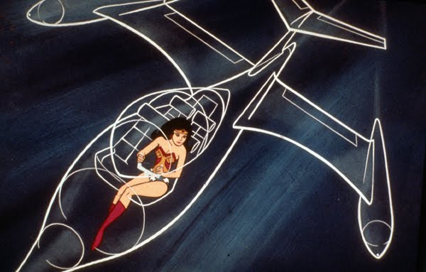

Say Hello to Invisible Fighter Jets

The U.S. recently lead a assault on ISIS operations. Why? Because more war is apparently better than less war and ISIS has developed a nasty habit of removing American heads from American bodies. Though the U.S. retaliation flooded the news, one specific fact nugget within the attack details kept popping up. This was the U.S.’s first use of the stealth F-22 Raptor, the deadly result of a $67 billion stealth fighter program. Up until this ISIS mission, the Raptors remained quaranteaned to Jurassic Park doing a lot of nothing. These scary-ass, invisble planes entered service a whopping nine years ago in 2005 (or twelve years after Jurassic Park hit theaters). Military leaders simply said that up until now the Raptors didn’t make sense in previous engagements. Huh, I guess the eight year-long Iraq War was humming along just fine without the addition of a few stealth, multi-purpose fighter jets.
{kind=link}
Meanwhile Russia has decided to copy Hollywood and reboot the Cold War. Russia's very own Bond villain turned President, Vladimir Putin, has decided he misses the bygone days of the USSR and has interest in reliving the past with some casual nation annexing. Despite U.S. sanctions against Russia, Putin went full retard by reminding the world Russia is a nuclear power and doesn’t really mind using them. I think he missed the villain lecture discussing the realities of mutually assured destruction and the joy of mounting lasers to sharks. With the increasing global upheaval, I wonder if the U.S. military decided to put the Raptors to work as a big middle finger to the world and a reminder that the U.S. spends roughly $640 billion on defense, more than the next EIGHT countries combined. So there you go world, say hello to invisible fighter jets. You’re welcome.